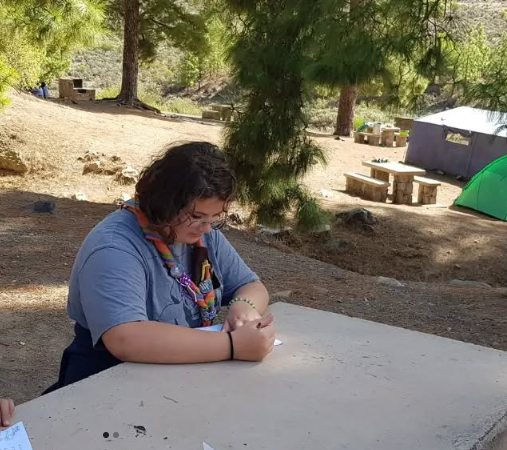
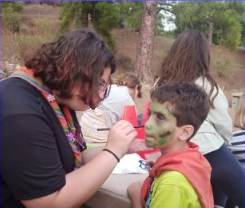
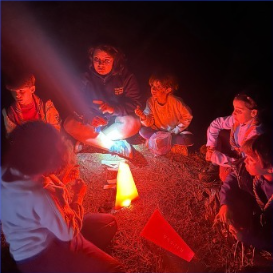

Voluntariados
Formé parte del grupo scout Doramas 104 durante varios años. Mi segundo año como esculta fue especialmente intenso: era la mayor de mi unidad y no había rovers, por lo que asumí responsabilidades muy por encima de lo que corresponde a mi rango. Durante las acampadas y actividades trabajé prácticamente como scouter, aprendiendo a organizarme y a liderar de una forma que ningún aula me habría enseñado.


Los voluntariados con los scouts fueron constantes. Trabajamos con asociaciones de personas con síndrome de down para aprender a tratarlas correctamente y concienciar a quienes nos rodeaban. Participamos en recogidas de basura en calles y playas, cargando bolsas durante horas en los pateos sin pensárnoslo dos veces. También colaboramos en eventos como Corriendo por Vegueta, donde pasamos horas preparando y repartiendo bolsas y medallas a los corredores, y en el BIOAgaete.
En 2025 participé en un viaje a Cercedilla con la red Reconoce, una organización que acredita las competencias adquiridas a través del voluntariado y la educación no formal. Esta experiencia me permitió desarrollar competencias transversales en situaciones reales de trabajo, aunque no remuneradas. El voluntariado no solo transforma a quienes reciben la ayuda — también transforma a quienes lo practican.
